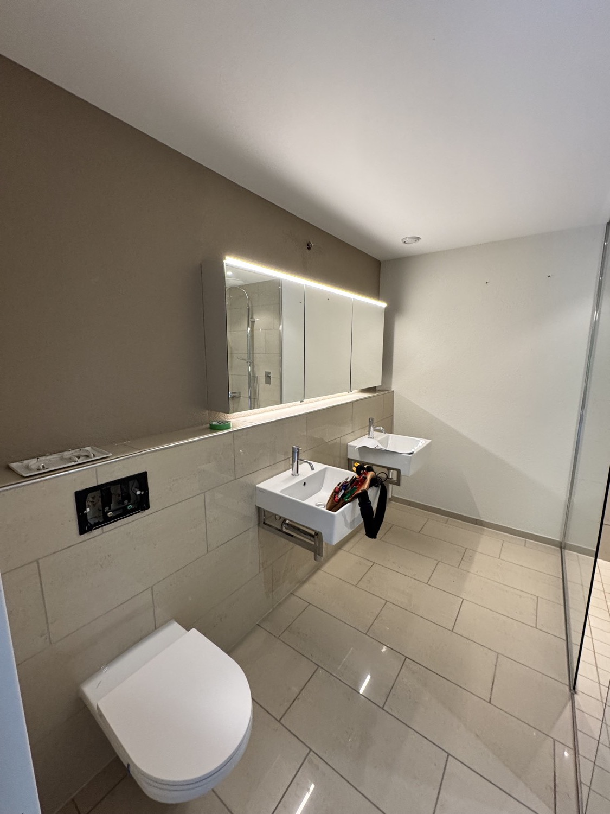

Chaque chantier reflète notre approche d'entreprise générale : exigence, pilotage rigoureux et finitions maîtrisées. Découvrez quelques projets livrés par bauV, de l'appartement à la maison.
Appartements entièrement repensés, maisons haut de gamme, salles d'eau transformées : à Genève, Carouge, Lancy, Lausanne ou Nyon, bauV pilote chaque rénovation de A à Z. Un seul interlocuteur coordonne tous les corps de métier, dans le respect du budget et des délais.
Les projets ci-dessous illustrent notre exigence de finition. Cette page s'enrichit régulièrement de nouvelles réalisations dans tout l'arc lémanique.

Salles d'eau, sols et sanitaires entièrement repris.
Voir le projet →
Du décapage des sols à la mise en peinture, de bout en bout.
Voir le projet →
Carrelage grand format, double vasque et finitions haut de gamme.
Voir le projet →Parlons de votre rénovation. Première analyse offerte, en visio ou directement chez vous.
Démarrer mon projet →